A latent rectified flow approach to generate synthetic wearable data
a LABDA solution
The first latent Rectified Flow architecture for IMU signal generation: a class-conditioned framework for raw wearable accelerometer and gyroscope synthesis, evaluated across 12 participant-held-out folds, 2 sensor configurations, 4 activities, and 9 segmentation settings.
* 6 = Full IMU channels (accelerometer + gyroscope) · 3 = Accelerometer only
Abstract
Class-conditioned generation of six-channel accelerometer and gyroscope windows, evaluated for physical plausibility, downstream HAR utility, and memorisation risk under strict participant-independent validation. LRF-IMU combines a convolutional variational autoencoder with class-conditioned Rectified Flow to generate new time-domain IMU windows and evaluate them where they matter: on real, unseen participants.
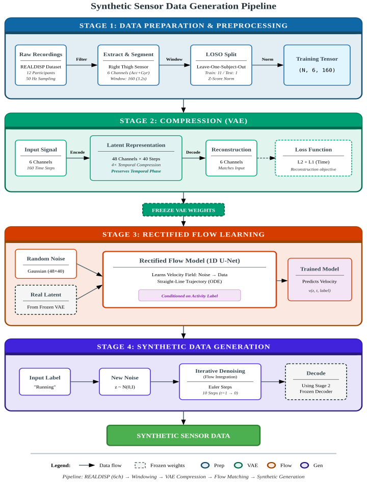
The Challenge
Labelled wearable datasets are expensive to collect and often too small to represent movement variability across people. Synthetic data are useful only when they preserve downstream information rather than merely looking plausible.
The Approach
Six-channel right-thigh IMU windows are compressed to a structured latent sequence. A single conditional flow model learns to transport Gaussian noise toward activity-specific latent distributions.
The Test
Every generative model and classifier is evaluated inside a 12-fold leave-one-subject-out protocol. Synthetic-only classifiers are tested on real windows from a participant never seen during training.
Scope & Limitations
What the paper establishes
Stable class-conditioned latent generation; high synthetic-only HAR utility; strong low-data augmentation; robust results across nine segmentation settings; low memorisation indicators under the evaluated audits.
What remains open
Additional placements and cohorts, continuous sequence generation, matched external baselines, broader privacy threat models, and validation under larger activity taxonomies.
Experimental Protocol
A controlled REALDISP evaluation with strict participant separation
The experimental protocol was designed around subject-independent evaluation, direct comparability with prior diffusion-based work on REALDISP, and strict separation between generative-model training and held-out-subject evaluation.
Dataset
REALDISP benchmark — ideal-placement right-thigh IMU
REALDISP Benchmark
- Participants
- 17
- Activities
- 33
- Sensors
- Xsens MTw IMUs
- Sampling rate
- 50 Hz
- Placements
- Ideal, self-placement, mutual displacement
Subset Evaluated in This Paper
- Participants
- 12 with complete recordings
- Placement
- Ideal placement only
- Sensor
- One right-thigh IMU
- Channels
- Triaxial accelerometer + triaxial gyroscope (6 channels)
Four Selected Activities
Periodic locomotion.
Periodic locomotion with different cadence and impact magnitude.
Impulse-dominated movement; acts as the minority class.
Smooth, predominantly rotational lower-limb motion constrained by the pedal cycle.
Signal Preparation
Windowing, stride, and fold-specific standardisation
Segmentation
- Window length
- 160 samples (3.2 s)
- Stride
- 40 samples (0.8 s)
- Overlap
- 75%
Standardisation
- Method
- Per-channel z-score
- Fit on
- Training data only
- Applied to
- Held-out subject + synthetic samples
Sensor Configuration
- Sampling rate
- 50 Hz
- Accelerometer
- 3 axes (±16g)
- Gyroscope
- 3 axes (±2000°/s)
Split Integrity
Hash-based audit confirming no train–test leakage
Evaluation Protocol
LOSO cross-validation with TSTR and TRTR comparison
LOSO Leave-One-Subject-Out
In each run, one participant is held out as the test subject and models are trained on the remaining participants. This ensures no subject identity leaks between training and evaluation.
TSTR Train-on-Synthetic, Test-on-Real
Classifiers are trained exclusively on synthetic data generated from the training subjects and evaluated on real data from the held-out subject. Compared against TRTR (train-on-real, test-on-real) as the upper bound.
Key Metrics at a Glance
Bars are sized relative to the best observed value. Higher is better unless noted.
Architecture
From wearable signals to a learnable transport path
The architecture is deliberately two-stage: first preserve temporal structure in a compact latent representation, then learn how activity-conditioned noise should move toward that representation.
Prepare
Right-thigh, six-channel IMU; 50 Hz; 160-sample windows; fold-specific training-only standardisation.
Compress
The VAE maps 6 × 160 signals to 48 × 40 latent sequences while retaining temporal phase.
Transport
A conditional 1D U-Net predicts the velocity field between data latents and Gaussian noise.
Generate
Ten reverse-time Euler steps produce a data-like latent that the frozen decoder converts to IMU space.
Architecture detailsVAE · flow objective · conditional U-Net · inference ⌄
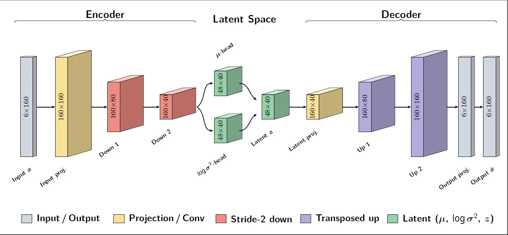
A fully convolutional VAE performs four-times temporal compression and reconstructs the complete six-channel window.
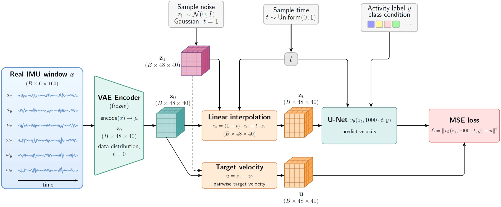
The velocity model learns the straight-line transport target between data latents and noise at randomly sampled flow times.
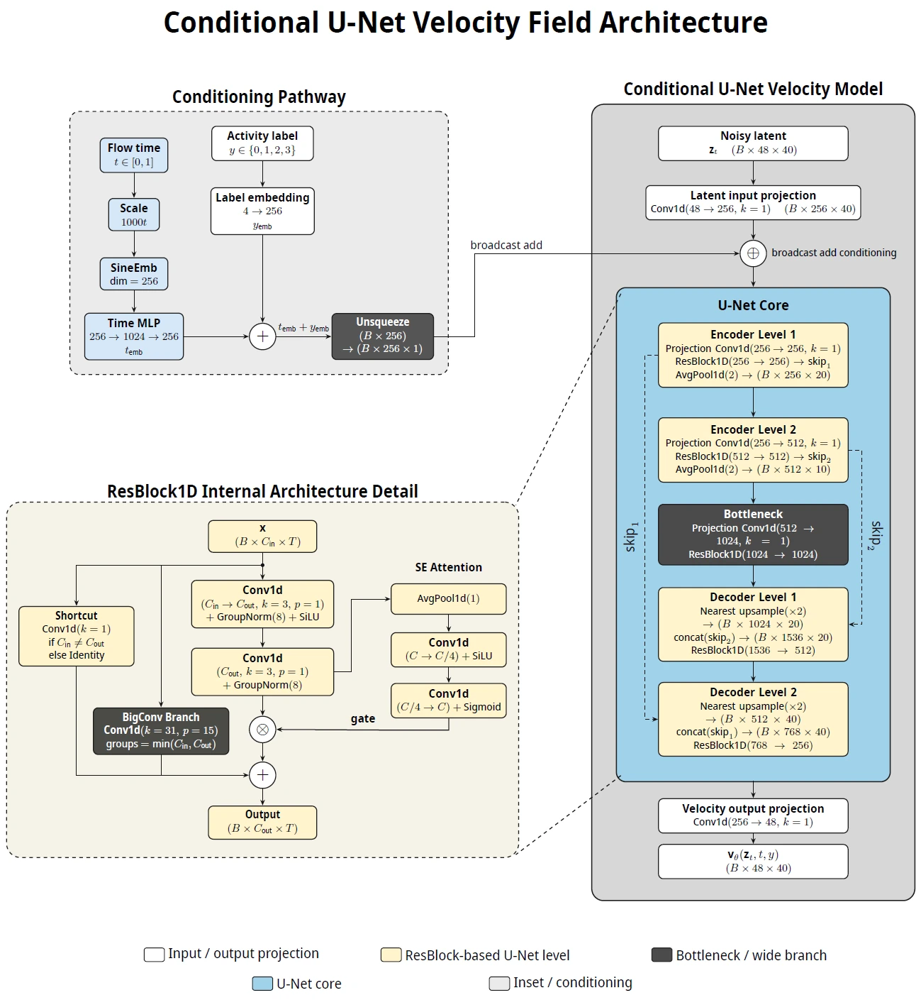
Multi-scale temporal convolutions, channel attention, skip connections, flow-time embeddings, and activity embeddings parameterise the latent velocity field.
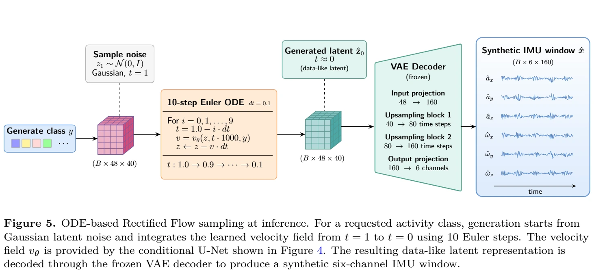
At inference, the requested class conditions a ten-step ODE integration from noise to a data-like latent representation.
Interactive Visualisation
From Gaussian noise to a synthetic IMU window
Starting from a Gaussian latent z1, the model integrates the learned ODE from t = 1 to t = 0 using an explicit Euler solver, conditioned on the activity label. The decoded states show a transition from noise to a coherent multi-channel IMU signal.
Waiting for trajectory data
Copy exported subject folders into uploads/trajectories/ to activate the viewer.
subject_XX/activity.json files under uploads/trajectories/. Serve via a local HTTP server (e.g. python -m http.server).
Website visualisation. The accepted-paper experiments use 10 Euler integration steps. The viewer replays the decoded states recorded in each JSON trajectory export, with the amplitude range fitted to every frame.
What the Study Reveals
Five questions that define whether synthetic sensor data are useful
Rather than a single headline number, each finding addresses a practical requirement for deployment, augmentation, or controlled data sharing. Click any figure for a high-resolution view.
01 Downstream HAR Utility
Classifiers trained only on synthetic IMU generalise to real unseen participants — with 97.1% of full-real performance retained.
Synthetic-only training achieved macro F1 0.956 ± 0.081, compared with 0.985 ± 0.021 when training on all real data, within strict LOSO folds.
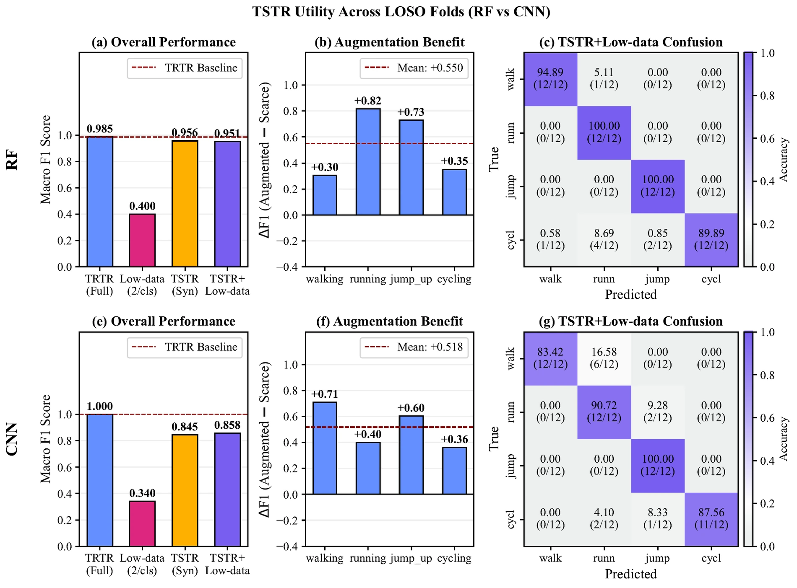
02 Low-Data Augmentation
Synthetic augmentation recovers most of the lost performance from only two real windows per class.
In the accelerometer-only configuration, macro F1 increased from 0.467 to 0.979 — a gain of +0.512.
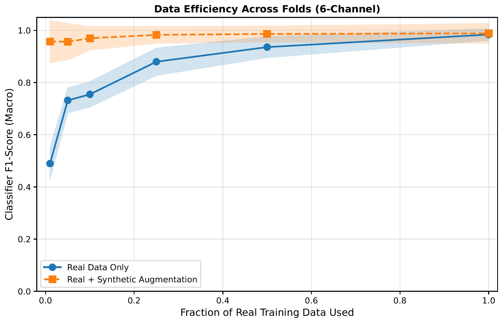
03 Flow Model Contribution
The VAE alone is not enough — Rectified Flow is doing the generative work.
Replacing Rectified Flow with class-wise Gaussian sampling in the same VAE latent space reduced TSTR macro F1 from 0.956 to 0.443 ± 0.171.
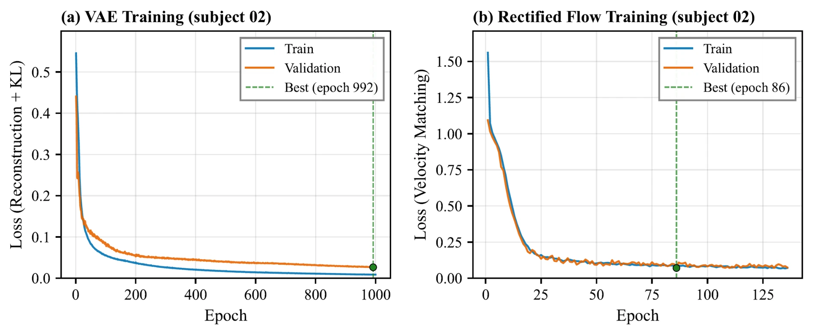
04 Physical & Temporal Fidelity
No synthetic acceleration value exceeded 10 g — structural fidelity matches real-to-real variation.
The synthetic–real correlation difference (0.158 ± 0.048) is essentially the same scale as the natural real–real difference between participants (0.157 ± 0.048).
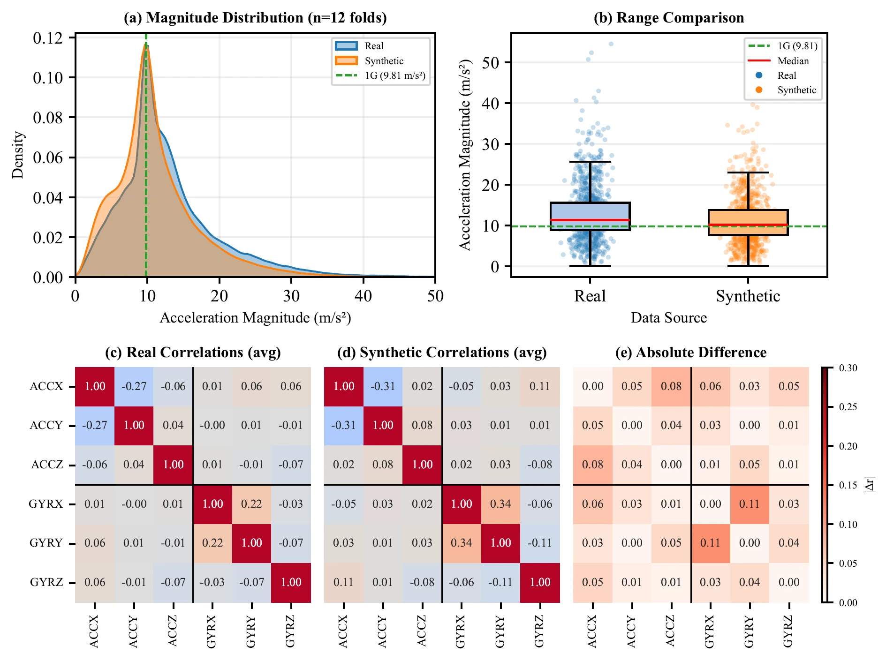
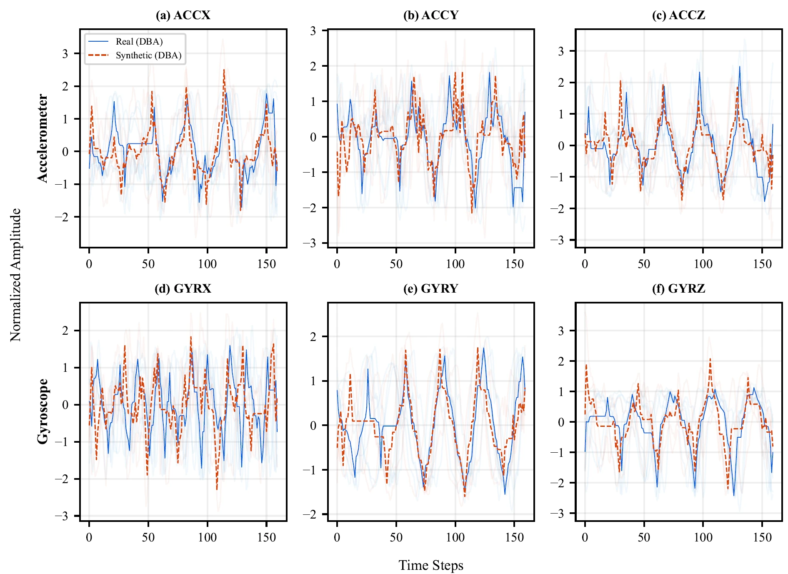
05 Memorisation & Privacy
Audits found no exact matches or near-duplicates — the model generates novel variations.
Membership-inference performance remained near chance at 0.495 ± 0.020 ROC-AUC, and an optimisation-based reconstruction attack achieved 0% success under the evaluated threat model.
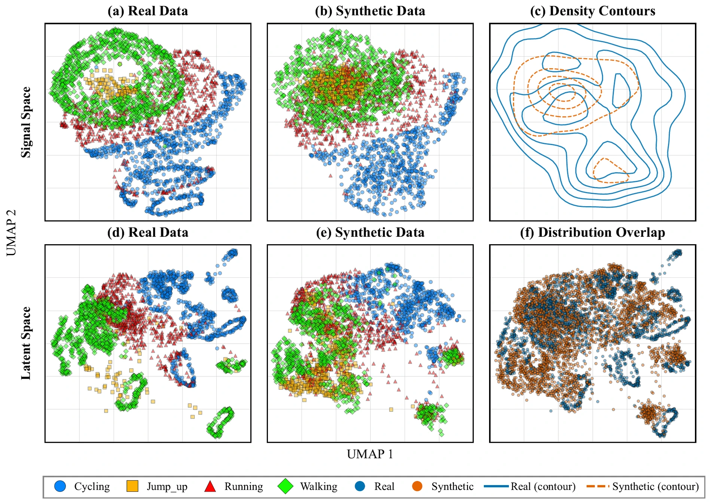
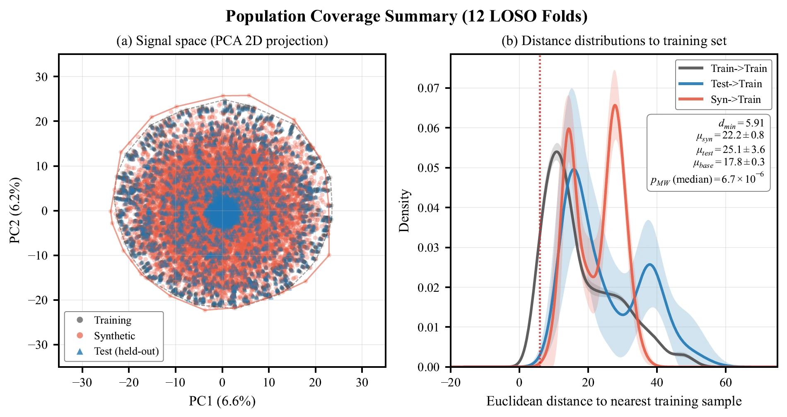
Practical Applications
Where LRF-IMU can make a difference
Six evidence-supported use cases for class-conditional synthetic IMU generation, grounded in the study's findings.
Low-labelled-data augmentation
Expand small, activity-labelled wearable datasets into larger training sets when supervised data collection is costly, time-consuming, or burdensome for participants.
Rare-event & class mitigation
Generate additional windows for under-represented activities such as falls, near-falls, turning, stair transitions, sit-to-stand, or brief high-impact events.
Subject-independent HAR
Support classifiers intended to generalise to unseen participants, with synthetic-only TSTR evaluation and low-data augmentation assessed under Leave-One-Subject-Out validation protocols.
Pilot & feasibility studies
Train an initial activity-recognition model from short supervised recording sessions, enabling earlier model development and faster design iterations in clinical trials.
Accelerometer-only sensing
Apply the separately trained three-channel configuration when power, hardware, cost, or deployment constraints limit sensing entirely to triaxial accelerometry.
Signal imputation & gap filling
Extend the framework to propose plausible replacements for missing or corrupted intervals. This is a future application and requires dedicated boundary evaluation.
Open & Reproducible
Get started
The DOI and public research-code repository are live. The curated checkpoint releases are being prepared to accompany the final version of record.
Paper
10.1088/3049-477X/ae91ef
Code
Inference & reproduction
Models
Fold-trained checkpoints
Synthetic Examples
NPZ + CSV samples
Citation
Rezaei et al 2026 Machine Learning: Health
10.1088/3049-477X/ae91ef
@article{rezaei2026lrfimu,
title = {A latent rectified flow approach to generate
synthetic wearable data -- a LABDA solution},
author = {Rezaei, Amin and Kjaergaard, Morten and
Schipperijn, Jasper},
journal = {Machine Learning: Health},
year = {2026},
doi = {10.1088/3049-477X/ae91ef},
publisher = {IOP Publishing}
}
Acknowledgements
This work was supported by the LABDA (Learning network for Advanced Behavioural Data Analysis) MSCA Doctoral Network, under the Horizon Europe research and innovation programme, grant agreement No. 101072993.